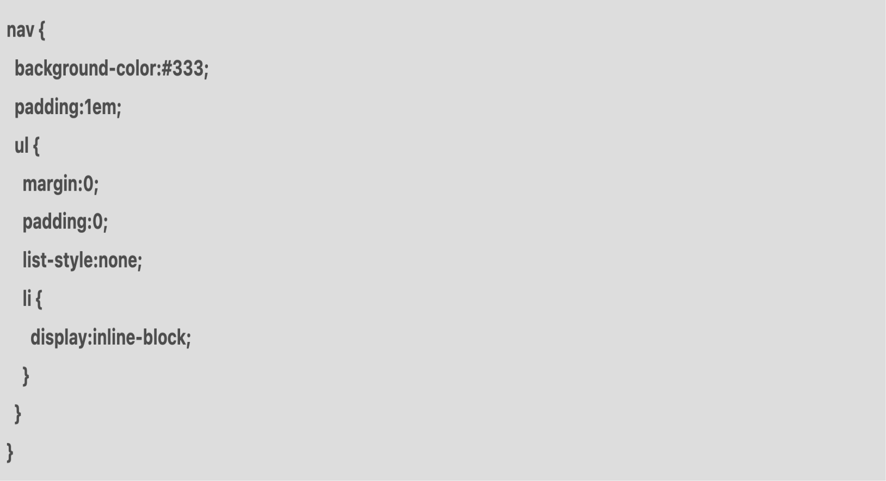
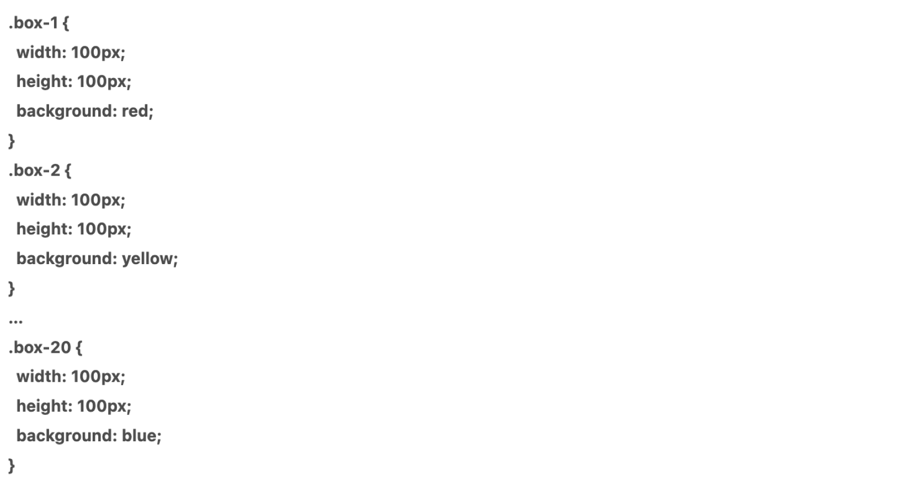

Hallo saya di sini sedang bealajar sass/scss
Apa itu SCSS?
SCSS atau Sassy CSS adalah sintaks terbaru dari SASS (Syntactically Awesome Style Sheets). SASS sendiri adalah preprocessor CSS, yaitu sebuah program untuk mengolah data menggunakan syntax tertentu dengan output CSS. SCSS banyak digunakan karena memiliki aturan penulisan yang lebih ramah bagi developer. Selain itu, banyak fitur yang ditawarkan agar coding jadi lebih efisien. Jadi, Anda tak perlu berulang kali menulis kode yang sama seperti ketika coding dengan CSS. Lalu, bagaimana cara kerja SCSS sebagai preprocessor? Pertama-tama Anda melakukan coding dengan syntax SCSS, lalu menyimpan file tersebut dengan ekstensi .scss. Nah, karena file .scss tidak dapat dibaca oleh browser, maka akan ada proses kompilasi (preprocessing) agar menjadi sebuah file CSS.

Apa Saja Fitur-Fitur SCSS?
Berikut ini adalah beberapa fitur SCSS yang membuat pekerjaan coding Anda lebih mudah:
1. Nesting
Nesting adalah fitur yang membantu Anda mengurangi frekuensi penulisan selektor dengan cara mengelompokkannya dalam satu kelas yang sama. Ketika Anda menggunakan CSS untuk merancang navigasi bar sebuah website, inilah contoh kode yang akan digunakan:

Dalam contoh itu, Anda perlu menuliskan nav dalam setiap tag. Sebab, tag adalah parent dari setiap kelas.
Ketika menggunakan SCSS dengan fitur nesting, Anda cukup menggunakan kode nav untuk setiap kelas sebagai berikut:
Dengan demikian, pekerjaan coding bisa dilakukan lebih cepat, bukan?
2. Variables
Variabel merupakan fitur untuk menyimpan rules yang sering Anda gunakan. Jadi, ketika Anda ingin mengubah rules di banyak elemen, Anda tidak perlu mengubah rules satu-persatu. Cukup dengan sekali perubahan saja.
Contohnya, Anda memiliki 20 variabel dengan nama boks. Variabel itu mewakili warna background yang berbeda tapi memiliki ukuran yang sama.
Jika Anda menuliskannya dalam CSS, contoh kode yang digunakan adalah seperti ini:
Masalah yang muncul adalah jika suatu hari klien Anda ingin mengubah ukuran semua elemen menjadi lebih besar. Tentu Anda perlu mengganti kode ukuran width dan height satu persatu, hal ini tentu akan merepotkan Anda.
Nah, dengan SCSS, Anda bisa menyimpan rules width dan height sebagai sebuah variabel. Contohnya seperti ini